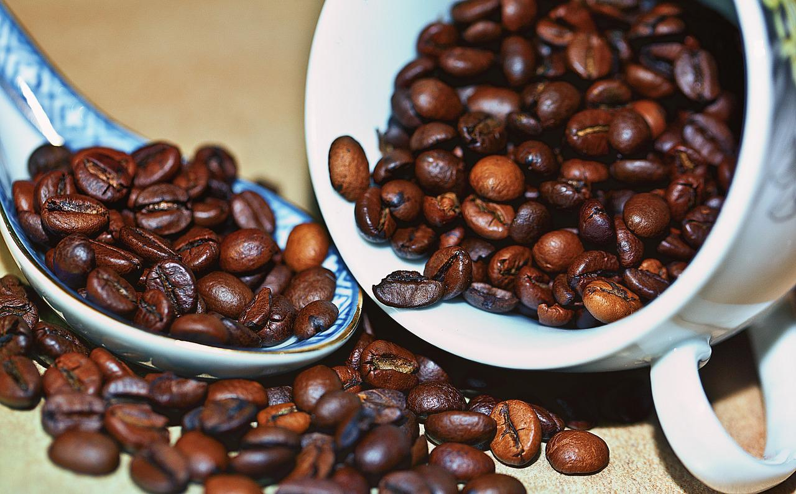

로부스타 정의
로부스타라는 사하라 사막 이남의 아프리카가 원산지입니다. 또한 인도네시아와 베트남에서도 많이 볼 수 있는데 특히 베트남에서 여행 시 선물로 많이 사게 되는 많은 커피 원두가 바로 이 로부스타 종류입니다. 로부스타는 다른 커피 원두에 비해 좀 더 크고 둥글고, 일반적으로 좀 더 단단합니다. 또한 아라비카보다 더 많은 카페인을 함유하고 있다고 알려져 있습니다.. 블렌드 된 커피에서 흔히 볼 수 있고, 인스턴트커피의 경우 로부스타로 만들어진 경우가 많습니다. 인스턴트커피 브랜드에서 아라비카로 만들어졌다고 광고하는 것은, 이 제품은 저렴한 로부스타 대신 좀 더 비싼 원두를 사용하였다는 것을 의미합니다.
로부스타 특징
가격이 저렴한 편이지만 맛과 향이 여전히 좋아 커피 애호가들 사이에서는 퀄리티 높은 로부스타를 찾기도 합니다. 좀 더 러프하고 탄 맛에 가까운 거친 향이 납니다.